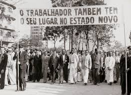

-
Origem dos protestos
A ideia de comemorar o Dia do Trabalho surgiu após os protestos em Chicago, nos Estados Unidos, em 1886, onde trabalhadores lutaram por uma jornada de trabalho de oito horas.
-
Portugal
Em Portugal, o Dia do Trabalho é também um feriado nacional, um momento de reflexão sobre a luta por direitos trabalhistas e uma oportunidade para celebrar as conquistas dos trabalhadores.
-
Comemorações
As comemorações podem variar desde manifestações e greves a festas populares, shows e eventos culturais.

Dia do trabalhador na Wikipedia
Página Principal